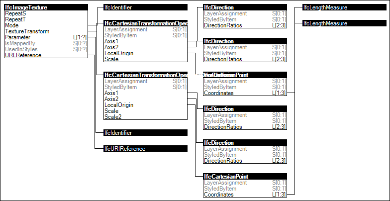

Link to this page
Link to this pageImage textures are based on external files in common image formats such as PNG or JPEG. Such files may be located on servers according to absolute URLs, on the same server as the IFC file according to relative URLs, within the same local directory according to relative file path, within an IFC-ZIP file according to relative file path, or within an arbitrary directory according to absolute file path.
Absolute URLs are recommended for textures published at a location deemed to be permanent (independent of the building model data), while relative URLs are recommended for all other sharing scenarios. Local file paths should be avoided.
Scaling is supported to correlate the size of a texture with its physical dimensions, and enables usage of textures on parametric geometry such that texture coordinates need not be defined.
Figure 115 illustrates an instance diagram.
 |
Figure 115 — Image Texture |